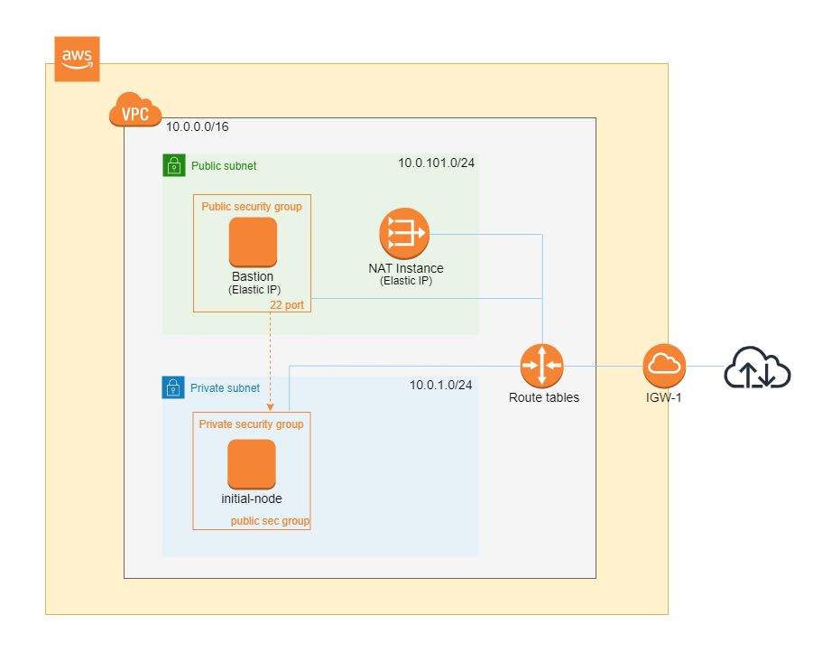
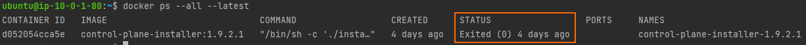
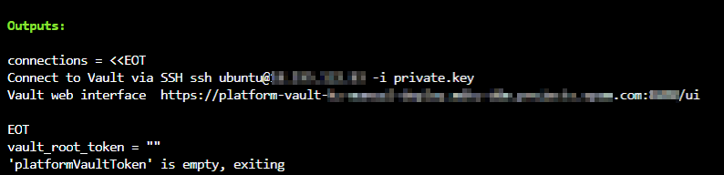
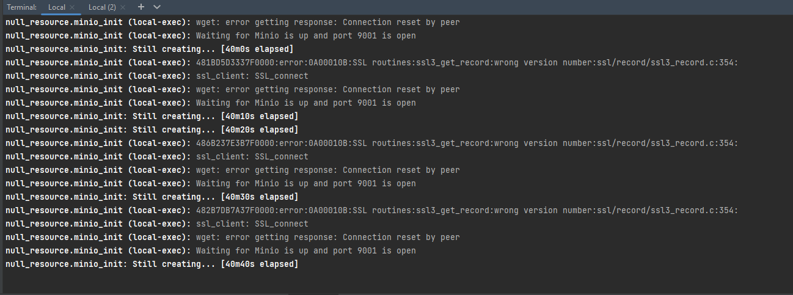

Розгортання Платформи з нуля в публічному хмарному середовищі AWS
- 1. Передумови
- 2. Розгортання додаткових ресурсів для інсталяції OKD-кластера в AWS
- 3. Підготовка до встановлення OKD-кластера в AWS
- 4. Запуск OKD4-інсталера та розгортання порожнього кластера OKD4
- 5. Заміна самопідписаних сертифікатів на довірені сертифікати
- 6. Підготовка та запуск Інсталера для розгортання та оновлення Платформи в OKD-кластері
- 7. Типові помилки під час розгортання платформи
| 🌐 Цей документ доступний українською та англійською мовами. Використовуйте перемикач у правому верхньому куті, щоб змінити версію. |
Ця інструкція надає детальну інформацію про розгортання платформи з нуля в AWS-середовищі, починаючи зі створення облікового запису AWS і закінчуючи інсталяцією платформи з усіма додатковими налаштуваннями.
1. Передумови
Перед розгортанням і налаштуванням платформи потрібно обов’язково виконати наступні дії.
1.1. Необхідні елементи початкового етапу
Перед початком будь-яких дій потрібно мати в наявності набір ресурсів, які обов’язкові для подальших кроків:
- Документація:
-
-
Документ Примітки до релізу;
-
Документ Зворотно несумісні зміни;
-
Документ Оновлення компонентів Платформи та реєстру. Він потрібний лише для процедури оновлення Платформи.
-
- Сертифікати цифрового підпису (digital-signature-ops сертифікати):
-
-
Key-6.dat — приватний ключ організації (лише для файлового ключа);
-
allowed-key.yaml — перелік усіх виданих ключів. Спочатку це лише первинний Key-6.dat. При зміні ключа, туди додається інформація про новий ключ, не видаляючи старий;
-
CAs.json — перелік всіх АЦСК, береться з сайту ІІТ;
-
CACertificates.p7b - публічний ключ, береться з сайту ІІТ.
-
- Файли конфігурації для файлового та апаратного ключів:
-
-
3 файли, заповнені значеннями — для файлового носія (див. закріплені приклади):
-
sign.key.device-type — вкажіть тип носія для ключа (файловий);
-
sign.key.file.issuer — вкажіть АЦСК, що видав ключ (замініть у файлі значення на своє);
-
sign.key.file.password — вкажіть пароль до файлового ключа (замініть у файлі значення на своє).
4 файли із порожніми значеннями — для апаратного носія (створіть 4 порожні файли із відповідними назвами):
-
sign.key.hardware.device — тип носія для ключа (апаратний);
-
sign.key.hardware.password — пароль апаратного ключа;
-
sign.key.hardware.type — тип ключа;
-
osplm.ini — INI-конфігурація.
Детальніше про особливості завантаження/оновлення ключів та сертифікатів цифрового підпису ви можете переглянути на сторінці Оновлення ключів та сертифікатів цифрового підпису для Платформи. -
docker-образ контейнера
openshift-install(див. детальніше у розділі Запуск контейнера openshift-install); -
завантажений Інсталер — скрипт для розгортання Платформи (див. детальніше у розділі Підготовка та запуск Інсталера для розгортання та оновлення Платформи в OKD-кластері).
-
1.2. Створення облікового запису AWS
Перед встановленням OpenShift Container Platform на Amazon Web Services (AWS), необхідно створити обліковий запис AWS.
Це можна зробити, користуючись офіційною документацією на сайті AWS: How do I create and activate a new AWS account?
1.3. Налаштування облікового запису AWS
Перш ніж встановити OpenShift Container Platform, потрібно налаштувати обліковий запис Amazon Web Services (AWS).
1.3.1. Налаштування Route 53
Щоб встановити OpenShift Container Platform, потрібно зареєструвати домен. Це можна зробити у сервісі Route 53, або ж використати будь-який інший реєстратор доменних імен.
Також обліковий запис Amazon Web Services (AWS), який використовується, повинен мати виділену публічну зону хостингу в сервісі Route 53.
| Докладніше описано в офіційній документації на сайті OKD: Configuring Route 53. |
1.3.2. Налаштування зовнішнього домену
Якщо для створення домену було використано не AWS Route 53, а зовнішній реєстратор доменних імен, то необхідно виконати делегування домену. Для цього виконайте наступні дії:
-
Перейдіть у створений обліковий запис AWS та створіть публічну зону хостингу у сервісі Route 53 (як було описано у п. Налаштування Route 53). Назвати її необхідно так само як і зовнішній створений домен.
-
Увійдіть до створеної публічної зони хостингу та перегляньте запис із типом
NS(Name Servers — це сервери імен, які відповідають на DNS-запити для домену). У значенні будуть вказані сервери імен. Необхідно зберегти назви цих серверів для подальшого використання у наступних кроках. -
Перейдіть до зовнішнього реєстратора доменних імен, в якому було створено домен.
-
Відкрийте налаштування цього домену та знайдіть налаштування, що стосуються NS-серверів;
-
Відредагуйте NS-сервери відповідно до NS-серверів, які взято із публічної зони хостингу з облікового запису AWS.
1.3.3. Ліміти облікового запису AWS
Кластер OpenShift Container Platform використовує ряд компонентів Amazon Web Services (AWS), і стандартні обмеження послуг впливають на можливість встановлення кластера.
Перелік компонентів AWS, обмеження яких можуть вплинути на можливість встановлення та запуску кластера OpenShift Container Platform, наведено у документації на сайті OKD: AWS account limits.
| Також обов’язково потрібно збільшити обмеження CPU для on-demand віртуальних машин в обліковому записі Amazon Web Services (AWS). Необхідні для цього дії описані в офіційній документації на сайті AWS: How do I request an EC2 vCPU limit increase for my On-Demand Instance? |
1.3.4. Створення користувача IAM
-
Перед встановленням OpenShift Container Platform, створіть користувача IAM, користуючись офіційною документацією на сайті AWS: Creating an IAM user in your AWS account.
-
Окрім цього виконайте наступні важливі вимоги:
-
Видаліть будь-які обмеження Service control policies (SCPs) з облікового запису AWS.
Під час створення кластера, також створюється асоційований постачальник ідентичностей AWS OpenID Connect (OIDC). Ця конфігурація постачальника OIDC базується на відкритому ключі, який знаходиться в регіоні AWS us-east-1. Клієнти з AWS SCP повинні дозволити використання регіону AWSus-east-1навіть якщо кластер буде розгорнуто в іншому регіоні. Без правильного налаштування цих політик, одразу можуть виникнути помилки з дозволами, оскільки інсталятор OKD перевіряє правильність їх налаштування.Детальну інформацію можна отримати в офіційний документації, у пункті 1.1. DEPLOYMENT PREREQUISITES документа Red Hat OpenShift Service on AWS 4. Prepare your environment. -
Правильно налаштуйте permissions boundary у створеного IAM-користувача.
Нижче наведено приклад політики permissions boundary. Можна використати її, або зовсім видалити будь-які permissions boundary.
Приклад. Налаштування політики permissions boundary
{ "Version": "2012-10-17", "Statement": [ { "Effect": "Allow", "NotAction": [ "iam:*" ], "Resource": "*" }, { "Effect": "Allow", "Action": [ "iam:Get*", "iam:List*", "iam:Tag*", "iam:Untag*", "iam:GenerateServiceLastAccessedDetails", "iam:GenerateCredentialReport", "iam:SimulateCustomPolicy", "iam:SimulatePrincipalPolicy", "iam:UploadSSHPublicKey", "iam:UpdateServerCertificate", "iam:CreateInstanceProfile", "iam:CreatePolicy", "iam:DeletePolicy", "iam:CreatePolicyVersion", "iam:DeletePolicyVersion", "iam:SetDefaultPolicyVersion", "iam:CreateServiceLinkedRole", "iam:DeleteServiceLinkedRole", "iam:CreateInstanceProfile", "iam:AddRoleToInstanceProfile", "iam:DeleteInstanceProfile", "iam:RemoveRoleFromInstanceProfile", "iam:UpdateRole", "iam:UpdateRoleDescription", "iam:DeleteRole", "iam:PassRole", "iam:DetachRolePolicy", "iam:DeleteRolePolicy", "iam:UpdateAssumeRolePolicy", "iam:CreateGroup", "iam:UpdateGroup", "iam:AddUserToGroup", "iam:RemoveUserFromGroup", "iam:PutGroupPolicy", "iam:DetachGroupPolicy", "iam:DetachUserPolicy", "iam:DeleteGroupPolicy", "iam:DeleteGroup", "iam:DeleteUserPolicy", "iam:AttachUserPolicy", "iam:AttachGroupPolicy", "iam:PutUserPolicy", "iam:DeleteUser", "iam:CreateRole", "iam:AttachRolePolicy", "iam:PutRolePermissionsBoundary", "iam:PutRolePolicy" ], "Resource": "*" }, { "Effect": "Allow", "Action": [ "iam:CreateAccessKey", "iam:DeleteAccessKey", "iam:UpdateAccessKey", "iam:CreateLoginProfile", "iam:DeleteLoginProfile", "iam:UpdateLoginProfile", "iam:ChangePassword", "iam:CreateVirtualMFADevice", "iam:EnableMFADevice", "iam:ResyncMFADevice", "iam:DeleteVirtualMFADevice", "iam:DeactivateMFADevice", "iam:CreateServiceSpecificCredential", "iam:UpdateServiceSpecificCredential", "iam:ResetServiceSpecificCredential", "iam:DeleteServiceSpecificCredential" ], "Resource": "*" } ] }
-
| Докладніше процес створення IAM-користувача описано в офіційній документації на сайті OKD: Creating an IAM user. |
1.3.5. Необхідні дозволи AWS для користувача IAM
Для розгортання всіх компонентів кластера OpenShift Container Platform користувачеві IAM потрібні дозволи, які необхідно прикріпити до цього користувача.
Приклад таких дозволів наведено у наступній документації на сайті OKD: Required AWS permissions for the IAM user.
1.4. Створення додаткових облікових записів
Перед встановленням OpenShift Container Platform на Amazon Web Services (AWS), необхідно створити обліковий запис Docker Hub та Red Hat.
Це необхідно зробити для формування docker pull secret, який буде використовуватись пізніше.
1.4.1. Створення облікового запису Docker Hub
-
Деякі сервіси використовують images, які знаходяться у репозиторіях на Docker Hub. Для того, щоб мати можливість їх використовувати, потрібно створити акаунт, користуючись офіційною документацією на сайті Docker: Docker ID accounts.
-
Окрім цього, виникнуть проблеми із лімітом на кількість завантажень images на день. Це призведе до того, що сервіси не зможуть запуститися. Щоб цього уникнути, необхідно оновити підписку до рівня Pro. Це допоможе змінити обмеження на кількість пулів із 200 docker-образів/6 годин до 5000 docker-образів/день. Це можливо зробити користуючись офіційною документацією на сайті Docker: Upgrade your subscription.
1.4.2. Створення облікового запису Red Hat
Для того, щоб завантажити необхідні images для встановлення OpenShift Container Platform, необхідно створити Red Hat Account. Докладніше про те, як це зробити, описано в офіційній документації: Red Hat Login ID and Account.
Це необхідно для того, щоб завантажити сформований pull secret пізніше (докладніше описано у розділі Підготовка до встановлення OKD-кластера в AWS). Він дозволить пройти автентифікацію та завантажити образи контейнерів для компонентів OpenShift Container Platform.
2. Розгортання додаткових ресурсів для інсталяції OKD-кластера в AWS
Для вдалого встановлення кластера та платформи, потрібно підняти наступні ресурси в AWS. На малюнку нижче зображена схема інфраструктури із ними.

Це можна зробити самостійно за рекомендаціями зазначеними нижче або використати підготовлений Terraform-код.
2.1. Опис Terraform-коду
Як приклад автоматизації процесу було реалізовано Terraform-код, який можна підлаштувати під свої параметри та використати для розгортання інфраструктури.
2.1.1. Початковий Terraform-код
Це Terraform-код, який створить ресурси для подальших кроків. До таких ресурсів відносяться:
-
S3 Bucket — сховище для зберігання файлів *.tfstate;
-
DynamoDB Table — таблиця, необхідна для блокування стану Terraform.
main.tf
data "aws_caller_identity" "current" {}
module "s3_bucket" {
source = "terraform-aws-modules/s3-bucket/aws"
version = "3.6.0"
bucket = "terraform-states-${data.aws_caller_identity.current.account_id}"
acl = "private"
# S3 bucket-level Public Access Block configuration
block_public_acls = true
block_public_policy = true
ignore_public_acls = true
restrict_public_buckets = true
versioning = {
enabled = true
}
tags = merge(var.tags)
}
module "dynamodb_table" {
source = "terraform-aws-modules/dynamodb-table/aws"
version = "3.1.2"
name = var.table_name
billing_mode = "PROVISIONED"
read_capacity = "1"
write_capacity = "1"
hash_key = "LockID"
attributes = [
{
name = "LockID"
type = "S"
}
]
tags = merge(var.tags, tomap({ "Name" = var.table_name }))
}providers.tf
terraform {
required_version = "= 1.3.7"
}
provider "aws" {
region = var.region
}terraform.tfvars
region = "eu-central-1"
tags = {
"SysName" = "EPAM"
"Department" = "MDTU-DDM"
"user:tag" = "mdtuddm1"
}variables.tf
variable "region" {
description = "The AWS region to deploy the cluster into, e.g. eu-central-1"
type = string
}
variable "s3_states_bucket_name" {
description = "Prefix for S3 bucket name. Since the name should be unique the account number will be added as suffix, e.g. terraform-states-<AWS_ACCOUNT_ID>"
type = string
default = "terraform-states"
}
variable "table_name" {
description = "the name of DynamoDb table to store terraform tfstate lock"
type = string
default = "terraform_locks"
}
variable "tags" {
description = "A map of tags to apply to all resources"
type = map(any)
}2.1.2. Основний Terraform-код
Основний Terraform-код, розгортає усі необхідні ресурси. Опис шаблонів наведено нижче.
main.tf
module "vpc" {
source = "terraform-aws-modules/vpc/aws"
version = "3.19.0"
name = var.platform_name
cidr = var.platform_cidr
azs = var.subnet_azs
private_subnets = var.private_cidrs
public_subnets = var.public_cidrs
enable_dns_hostnames = true
enable_dns_support = true
enable_nat_gateway = true
single_nat_gateway = true
one_nat_gateway_per_az = false
tags = var.tags
}
module "ec2_instance" {
source = "terraform-aws-modules/ec2-instance/aws"
version = "4.3.0"
name = var.node_name
ami = var.node_ami
instance_type = var.node_type
key_name = module.key_pair.key_pair_name
vpc_security_group_ids = [aws_security_group.sg_private.id]
subnet_id = module.vpc.private_subnets[0]
user_data = templatefile("files/user_data.sh.tpl", { cross_account_role = var.cross_account_role_arn })
iam_instance_profile = aws_iam_instance_profile.node_profile.name
enable_volume_tags = false
root_block_device = [
{
encrypted = false
volume_type = var.volume_type
volume_size = var.volume_size
tags = var.tags
},
]
tags = var.tags
}
module "ec2_bastion" {
source = "terraform-aws-modules/ec2-instance/aws"
version = "4.3.0"
name = "bastion"
ami = var.node_ami
instance_type = "t2.nano"
key_name = module.key_pair.key_pair_name
vpc_security_group_ids = [aws_security_group.sg_public.id]
subnet_id = module.vpc.public_subnets[0]
enable_volume_tags = false
tags = var.tags
}
module "key_pair" {
source = "terraform-aws-modules/key-pair/aws"
version = "2.0.1"
key_name = var.key_pair
public_key = trimspace(tls_private_key.main.public_key_openssh)
tags = merge(var.tags, {
"Name" = var.key_pair
})
}providers.tf
terraform {
required_version = "= 1.3.7"
# Fill the gaps instead <...>
backend "s3" {
bucket = "terraform-states-<ACCOUNT_ID>"
key = "node/eu-central-1/terraform/terraform.tfstate"
region = "eu-central-1"
acl = "bucket-owner-full-control"
dynamodb_table = "terraform_locks"
encrypt = true
}
required_providers {
aws = {
source = "hashicorp/aws"
version = ">= 4.51.0"
}
}
}
provider "aws" {
region = var.region
}iam-node-role.tf
data "aws_iam_policy_document" "assume_role_policy" {
statement {
actions = ["sts:AssumeRole"]
principals {
type = "Service"
identifiers = ["ec2.amazonaws.com"]
}
}
}
resource "aws_iam_role" "node_role" {
name = var.role_name
description = "IAM role to assume to initial node"
assume_role_policy = data.aws_iam_policy_document.assume_role_policy.json
force_detach_policies = true
inline_policy {
name = "CrossAccountPolicy"
policy = jsonencode({
Version = "2012-10-17"
Statement = [
{
Action = "sts:AssumeRole"
Effect = "Allow"
Resource = var.cross_account_role_arn
},
]
})
}
tags = merge(var.tags, tomap({ "Name" = var.role_name }))
}
resource "aws_iam_instance_profile" "node_profile" {
name = var.role_name
role = aws_iam_role.node_role.name
tags = var.tags
}elastic-ip.tf
resource "aws_eip" "bastion_ip" {
instance = module.ec2_bastion.id
tags = merge(var.tags, {
"Name" = "bastion-ip"
})
}security-groups.tf
resource "aws_security_group" "sg_public" {
name = "sg public for bastion"
vpc_id = module.vpc.vpc_id
ingress {
from_port = var.ssh_port
to_port = var.ssh_port
protocol = "tcp"
# cidr_blocks = var.ingress_cidr_blocks
prefix_list_ids = [var.prefix_list_ids]
}
egress {
from_port = 0
to_port = 0
protocol = "-1"
cidr_blocks = ["0.0.0.0/0"]
}
tags = merge(var.tags, {
"Name" = "sg-public"
})
}
resource "aws_security_group" "sg_private" {
name = "sg private for node"
vpc_id = module.vpc.vpc_id
ingress {
from_port = var.ssh_port
to_port = var.ssh_port
protocol = "tcp"
security_groups = [aws_security_group.sg_public.id]
}
egress {
from_port = 0
to_port = 0
protocol = "-1"
cidr_blocks = ["0.0.0.0/0"]
}
tags = merge(var.tags, {
"Name" = "sg-private"
})
}ssh-key.tf
resource "tls_private_key" "main" {
algorithm = "RSA"
}
resource "null_resource" "main" {
provisioner "local-exec" {
command = "echo \"${tls_private_key.main.private_key_pem}\" > private.key"
}
provisioner "local-exec" {
command = "chmod 600 private.key"
}
}files/user_data.sh.tpl
#!/bin/bash
export VERSION_STRING=5:20.10.23~3-0~ubuntu-bionic
# Install docker
sudo apt-get update -y
sudo apt-get install \
ca-certificates \
curl \
gnupg \
lsb-release -y
sudo mkdir -p /etc/apt/keyrings
curl -fsSL https://download.docker.com/linux/ubuntu/gpg | sudo gpg --dearmor -o /etc/apt/keyrings/docker.gpg
echo \
"deb [arch=$(dpkg --print-architecture) signed-by=/etc/apt/keyrings/docker.gpg] https://download.docker.com/linux/ubuntu \
$(lsb_release -cs) stable" | sudo tee /etc/apt/sources.list.d/docker.list > /dev/null
sudo apt-get update -y
sudo apt-get install docker-ce=$VERSION_STRING docker-ce-cli=$VERSION_STRING containerd.io docker-compose-plugin -y
sudo usermod -aG docker ubuntu
# Install unzip
sudo apt install unzip -y
# Install aws-cli-v2
curl "https://awscli.amazonaws.com/awscli-exe-linux-x86_64.zip" -o "awscliv2.zip"
unzip awscliv2.zip
sudo ./aws/install
# Configure config for cross account integration
mkdir -p /home/ubuntu/.aws
touch /home/ubuntu/.aws/config
cat <<EOT >> /home/ubuntu/.aws/config
[profile cross-account-role]
role_arn = ${cross_account_role}
credential_source = Ec2InstanceMetadata
EOTterraform.tfvars
# Check out all the inputs based on the comments below and fill the gaps instead <...>
# More details on each variable can be found in the variables.tf file
region = "eu-central-1"
platform_name = "okd-4-11" # the name of the cluster and AWS resources
platform_cidr = "10.0.0.0/16"
# The following will be created or used existing depending on the create_vpc value
subnet_azs = ["eu-central-1a", "eu-central-1b", "eu-central-1c"]
private_cidrs = ["10.0.1.0/24"]
public_cidrs = ["10.0.101.0/24"]
ssh_port = 22
# Uncomment this line to use a custom IP address for the SSH connection
#ingress_cidr_blocks = ["<CUSTOM_IP>"]
# Using prefix-list from epam-east-eu
prefix_list_ids = "pl-0ede2509a36215538"
node_name = "initial-node"
node_ami = "ami-0e0102e3ff768559b"
node_type = "t2.medium"
key_pair = "node_key"
volume_type = "gp3"
volume_size = 150
role_name = "CustomEC2Role"
cross_account_role_arn = "arn:aws:iam::764324427262:role/CustomCrossAccountRole"
tags = {
"SysName" = "EPAM"
"Department" = "MDTU-DDM"
"user:tag" = "mdtuddm1"
}variables.tf
variable "region" {
description = "The AWS region to deploy the cluster into, e.g. eu-central-1"
type = string
}
variable "platform_name" {
description = "The name of the node that is used for tagging resources. Match the [a-z0-9_-]"
type = string
}
variable "platform_cidr" {
description = "CIDR of your future VPC"
type = string
}
variable "subnet_azs" {
description = "Available zones of your future or existing subnets"
type = list(any)
default = []
}
variable "private_cidrs" {
description = "CIDR of your future VPC"
type = list(any)
default = []
}
variable "public_cidrs" {
description = "CIDR of your future VPC"
type = list(any)
default = []
}
variable "node_name" {
description = "The name of the node that is used for tagging resources. Match the [a-z0-9_-]"
type = string
}
variable "node_ami" {
description = "The ami of the node"
type = string
}
variable "node_type" {
description = "Type of the node"
type = string
}
variable "key_pair" {
description = "The name of DynamoDb table to store terraform tfstate lock"
type = string
}
variable "volume_type" {
description = "Root volume type of the node"
type = string
}
variable "volume_size" {
description = "Root volume size of the node"
type = number
}
variable "ssh_port" {
description = "Open the 22 port"
type = number
}
#Use this for a custom IP address for the SSH connection
#variable "ingress_cidr_blocks" {
# description = "IP CIDR blocks for bastion"
# type = list(string)
#}
variable "prefix_list_ids" {
description = "IP CIDR blocks for bastion"
type = string
}
variable "role_name" {
description = "The AWS IAM role name for initial node"
type = string
}
variable "cross_account_role_arn" {
description = "The AWS IAM role arn to assume from another AWS account"
type = string
}
variable "tags" {
description = "A map of tags to apply to all resources"
type = map(any)
}
|
| Якщо для підняття додаткових компонентів використано Terraform-код, то перейдіть одразу до пункту Запуск контейнера openshift-install. |
2.2. Рекомендовані налаштування бастіону
У таблиці нижче наведено рекомендовані налаштування для бастіону.
| № | Опція налаштування | Значення |
|---|---|---|
1 |
Instance type |
t2.nano |
2 |
vCPUs |
1 |
3 |
RAM |
0.5 GiB |
4 |
CPU Credits/hr |
3 |
5 |
Platform |
Ubuntu |
6 |
AMI name |
ubuntu-bionic-18.04-amd64-server-20210224 |
7 |
Volume |
8 Gb |
2.3. Рекомендовані налаштування додаткової віртуальної машини
У таблиці нижче наведено рекомендовані налаштування для додаткової віртуальної машини.
| № | Опція налаштування | Значення |
|---|---|---|
1 |
Instance type |
t2.medium |
2 |
vCPUs |
2 |
3 |
RAM |
4 GiB |
4 |
CPU Credits/hr |
24 |
5 |
Platform |
Ubuntu |
6 |
AMI name |
ubuntu-bionic-18.04-amd64-server-20210224 |
7 |
Volume |
150 Gb |
2.4. Налаштування AWS cross account
Щоб встановити кластер та Платформу, необхідно завантажити на додаткову віртуальну машину Docker-образ для контейнера та Інсталер. Це можливо лише за умови, що створена спеціальна IAM-роль.
Потрібно перейти до AWS IAM-сервісу та створити роль для EC2-сервісу із наступними дозволами:
Trusted entities
{
"Version": "2012-10-17",
"Statement": [
{
"Sid": "",
"Effect": "Allow",
"Principal": {
"Service": "ec2.amazonaws.com"
},
"Action": "sts:AssumeRole"
}
]
}Inline permissions policies
{
"Version": "2012-10-17",
"Statement": [
{
"Action": "sts:AssumeRole",
"Effect": "Allow",
"Resource": "arn:aws:iam::764324427262:role/CustomCrossAccountRole"
}
]
}Після цього необхідно приєднати створену IAM роль до додаткової віртуальної машини.
| Докладніше про створення IAM-ролі та приєднання її до віртуальної машини описано в офіційній документації на сайті AWS: IAM roles for Amazon EC2. |
2.5. Додаткові налаштування віртуальної машини
2.5.1. Підключення до додаткової віртуальної машини
Щоб під’єднатися з локального комп’ютера до додаткової віртуальної машини, потрібно створити SSH-тунель. Це потрібно зробити наступною командою:
$ ssh -i <SSH_KEY> -L 1256:<NODE_PRIVATE_IP>:22 -N -f ubuntu@<BASTION_PUBLIC_IP>
Після створення SSH-тунелю, можна підключатися до додаткової віртуальної машини. Це потрібно зробити наступною командою:
$ ssh -i <SSH_KEY> ubuntu@localhost -p 1256
|
2.5.2. Встановлення необхідних інструментів
Для подальших дій потрібно встановити необхідні інструменти на додаткову віртуальну машину.
-
unzip
Перевірити правильність встановлення інструментів можна за допомогою наступних команд:
$ unzip -v
$ docker --version
$ aws --version
2.5.3. Використання профілю для AWS cross account
Необхідно виконати наступні кроки, щоб авторизуватися під роллю, яка має доступ до Docker образу для контейнера та Інсталера.
-
Авторизуватися на машині від IAM-користувача.
$ export AWS_ACCESS_KEY_ID=<КЛЮЧ_ДОСТУПУ> $ export AWS_SECRET_ACCESS_KEY=<СЕКРЕТНИЙ_КЛЮЧ_ДОСТУПУ>
-
Створити директорію .aws та файл config усередині:
$ mkdir -p ~/.aws $ touch ~/.aws/config
-
Додати до файлу config необхідні значення для ролі.
$ cat <<EOT >> ~/.aws/config [profile cross-account-role] role_arn = arn:aws:iam::764324427262:role/CustomCrossAccountRole credential_source = Ec2InstanceMetadata EOT
2.6. Запуск контейнера openshift-install
Щоб використовувати docker image контейнера openshift-install для встановлення кластера, потрібно виконати кроки, подані нижче.
-
Авторизуйтеся в AWS ECR.
$ sudo aws ecr get-login-password --profile cross-account-role --region eu-central-1 | docker login --username AWS --password-stdin 764324427262.dkr.ecr.eu-central-1.amazonaws.com -
Завантажте docker-образ (docker image).
$ docker pull 764324427262.dkr.ecr.eu-central-1.amazonaws.com/openshift-install:v3 -
Додайте тег до завантаженого docker-образу.
$ docker tag 764324427262.dkr.ecr.eu-central-1.amazonaws.com/openshift-install:v3 openshift-install:v3 -
Створіть нову директорію, в якій зберігатимуться усі дані кластера:
$ mkdir ~/openshift-cluster -
Перейдіть до створеної директорії.
$ cd ~/openshift-cluster -
Запустіть контейнер
openshift-install.$ sudo docker run --rm -it --name openshift-install-v3 \ --user root:$(id -g) \ --net host \ -v $(pwd):/tmp/openshift-cluster \ --env AWS_ACCESS_KEY_ID=<КЛЮЧ_ДОСТУПУ> \ --env AWS_SECRET_ACCESS_KEY=<СЕКРЕТНИЙ_КЛЮЧ_ДОСТУПУ> \ openshift-install:v3 bash
3. Підготовка до встановлення OKD-кластера в AWS
У версії 4.11 OpenShift Container Platform можливо встановити кастомізований кластер на інфраструктуру, яка передбачена програмою встановлення на Amazon Web Services (AWS).
|
Для того, щоб встановити кластер потрібно виконати наступні кроки:
-
Знаходячись у контейнері, перейдіть до директорії /tmp/openshift-cluster.
$ cd /tmp/openshift-cluster -
Завантажте кастомізований OKD інсталер, що містить виправлення blocker-проблеми, описаної в https://issues.redhat.com/browse/OCPBUGS-11636.
$ aws s3 cp s3://mdtu-ddm-platform-installer/okd-installer/openshift-install-zver-fix-aws-4.11.0-0.okd-2022-08-20-022-fix-aws.tar.gz openshift-install-zver-fix-aws-4.11.0-0.okd-2022-08-20-022-fix-aws.tar.gz --profile cross-account-role -
Виконайте дії, які описані в офіційній документації на сайті OKD, до кроку Deploying the cluster: Installing a cluster on AWS with customizations.
Зверніть увагу, що пункт Obtaining the installation program можна пропустити у зв’язку з використанням власного openshift-installer, що був завантажений раніше.Щоб налаштувати встановлення, потрібно створити файл install-config.yaml і внести до нього необхідні параметри перед тим, як встановити кластер. Після створення файлу потрібно заповнити необхідні параметри, які будуть представлені в контекстному меню. Створений конфігураційний файл включає тільки необхідні параметри для мінімального розгортання кластера. Для кастомізації налаштувань можна звернутись до офіційної документації.
- Рекомендовані параметри для файлу install-config.yaml:
-
install-config.yaml
apiVersion: v1 baseDomain: <BASE_DOMAIN>(1) compute: - architecture: amd64 hyperthreading: Enabled name: worker platform: aws: zones: - eu-central-1c rootVolume: size: 80 type: gp3 type: r5.2xlarge replicas: 3 controlPlane: architecture: amd64 hyperthreading: Enabled name: master platform: aws: zones: - eu-central-1c rootVolume: size: 80 type: gp3 type: r5.2xlarge replicas: 3 metadata: name: <CLUSTER_NAME> networking: clusterNetwork: - cidr: 10.128.0.0/14 hostPrefix: 23 machineNetwork: - cidr: 10.0.0.0/16 networkType: OpenShiftSDN platform: aws: region: eu-central-1 userTags: 'user:tag': <CLUSTER_NAME>(2) publish: External pullSecret: <PULL_SECRET>(4) sshKey: <SSHKEY>(3)-
(1)
<BASE_DOMAIN> — домен, який було створено та налаштовано у підрозділах Налаштування Route 53 та Налаштування зовнішнього домену. -
(2)
<CLUSTER_NAME>— ім’я майбутнього OKD-кластера. -
(3)
<SSHKEY>— ключ або ключі SSH для автентифікації доступу до машин кластера. Можна використати той самий ключ, що був створений під час встановлення OKD-кластера, або будь-який інший.Докладніше описано в офіційній документації на сайті OKD: Optional configuration parameters. -
(4) <PULL_SECRET> — секрет, який було створено у п. Створення додаткових облікових записів. Потрібно отримати цей секрет із Red Hat OpenShift Cluster Manager.
Докладніше про це описано в п. 5 офіційної документації на сайті OKD: Obtaining the installation program. До отриманого секрету також потрібно додати секрет для під’єднання до облікового запису Red Hat, а також секрет від акаунта Docker Hub. Об’єднаний секрет буде виглядати наступним чином:
Приклад об’єднаного секрету (pull secret)
{ "auths":{ "cloud.openshift.com":{ "auth":"b3Blb=", "email":"test@example.com" }, "quay.io":{ "auth":"b3Blb=", "email":"test@example.com" }, "registry.connect.redhat.com":{ "username":"test", "password":"test", "auth":"b3Blb=", "email":"test@example.com" }, "registry.redhat.io":{ "username":"test", "password":"test", "auth":"b3Blb=", "email":"test@example.com" }, "index.docker.io/v2/":{ "username":"test", "password":"test", "auth":"b3Blb=", "email":"test@example.com" } } }Для зручності запису цього секрету в файл install-config.yaml потрібно записати його в один рядок. Фінальний секрет буде виглядати наступним чином:
Приклад pull secret в один рядок
'{"auths":{"cloud.openshift.com":{"auth":"b3Blb=","email":"test@example.com"},"quay.io":{"auth":"b3Blb=","email":"test@example.com"},"registry.connect.redhat.com":{"username":"test","password":"test","auth":"b3Blb=","email":"test@example.com"},"registry.redhat.io":{"username":"test","password":"test","auth":"b3Blb=","email":"test@example.com"},"index.docker.io/v2/":{"username":"test","password":"test","auth":"b3Blb=","email":"test@example.com"}}}'
Після запуску процесу розгортання кластера, Інсталер видаляє install-config.yam, тому рекомендовано виконати резервування цього файлу, якщо є потреба розгортання кількох кластерів. -
4. Запуск OKD4-інсталера та розгортання порожнього кластера OKD4
Після створення файлу install-config.yaml, для розгортання OKD-кластера виконайте наступну команду:
$ ./openshift-install create cluster --dir /tmp/openshift-cluster/cluster-state --log-level=info| Процес розгортання кластера зазвичай займає до 1 години часу. |
При успішному розгортанні, в результаті виконання команди будуть представлені наступні параметри доступу до кластера:
-
логін;
-
пароль;
-
посилання до вебконсолі кластера.

У директорії, де виконувалася команда, буде створено ряд файлів, що зберігають статус кластера, необхідний для його деінсталяції.
| Докладніше про це описано в офіційній документації на сайті OKD, у секції Prerequisites: Uninstalling a cluster on AWS. |
Також в цій директорії з’явиться папка /auth, в якій буде збережено два файли для автентифікації: для роботи із кластером через вебконсоль та інтерфейс командного рядка OKD (OKD CLI).
5. Заміна самопідписаних сертифікатів на довірені сертифікати
Для заміни самопідписаних (self-signed) сертифікатів на довірені (trusted), необхідно спочатку отримати ці сертифікати.
У цьому пункті розглянуто отримання безплатних сертифікатів Let’s Encrypt та їх встановлення на сервер.
Отримання сертифікатів Let’s Encrypt здійснено за допомогою утиліти acme.sh.
| Для отримання деталей використання Let’s Encrypt на базі ACME-протоколу, зверніться до офіційного джерела. |
- Для заміни сертифікатів потрібно виконати наступні дії:
-
-
Задайте змінну середовища. Змінна повинна вказувати на файл kubeconfig.
$ export KUBECONFIG=cluster-state/auth/kubeconfig -
Створіть файл letsencrypt.sh та вставте у нього скрипт, який наведено нижче:
Скрипт для заміни сертифікатів
#!/bin/bash yum install -y openssl mkdir -p certificates export CERT_HOME=./certificates export CURDIR=$(pwd) cd $CERT_HOME # Клонування утиліти acme.sh із репозиторію GitHub git clone https://github.com/neilpang/acme.sh sed -i "2i AWS_ACCESS_KEY_ID=\"${AWS_ACCESS_KEY_ID}\"" ./acme.sh/dnsapi/dns_aws.sh sed -i "3i AWS_SECRET_ACCESS_KEY=\"${AWS_SECRET_ACCESS_KEY}\"" ./acme.sh/dnsapi/dns_aws.sh cd $CURDIR # Отримання API Endpoint URL export LE_API="$(oc whoami --show-server | cut -f 2 -d ':' | cut -f 3 -d '/' | sed 's/-api././')" # Отримання Wildcard Domain export LE_WILDCARD="$(oc get ingresscontroller default -n openshift-ingress-operator -o jsonpath='{.status.domain}')" ${CERT_HOME}/acme.sh/acme.sh --register-account -m user_${RANDOM}@example.com ${CERT_HOME}/acme.sh/acme.sh --issue -d ${LE_API} -d *.${LE_WILDCARD} --dns dns_aws export CERTDIR=$CERT_HOME/certificates mkdir -p ${CERTDIR} # Перенесення сертифікатів із шляху acme.sh за замовчуванням (default path) до більш зручної директорії, за допомогою --install-cert - ключа ${CERT_HOME}/acme.sh/acme.sh --install-cert -d ${LE_API} -d *.${LE_WILDCARD} --cert-file ${CERTDIR}/cert.pem --key-file ${CERTDIR}/key.pem --fullchain-file ${CERTDIR}/fullchain.pem --ca-file ${CERTDIR}/ca.cer # Створення секрету oc create secret tls router-certs --cert=${CERTDIR}/fullchain.pem --key=${CERTDIR}/key.pem -n openshift-ingress # Оновлення Custom Resource для Router oc patch ingresscontroller default -n openshift-ingress-operator --type=merge --patch='{"spec": { "defaultCertificate": { "name": "router-certs" }}}' -
Зробіть цей скрипт таким, що можливо виконати.
$ chmod +x ./letsencrypt.sh -
Виконайте цей скрипт.
$ bash -x ./letsencrypt.sh -
Вийдіть із контейнера після виконання скрипту. Це можна зробити за допомогою команди, яка знаходиться нижче. Контейнер видалиться автоматично.
Вихід із контейнера$ exit
-
6. Підготовка та запуск Інсталера для розгортання та оновлення Платформи в OKD-кластері
Для запуску Інсталера необхідно виконати ряд умов з підготовки робочої станції, з якої запускатиметься Інсталер.
6.1. Розгортання з нуля
6.1.1. Передумови
Перед запуском скрипту з інсталювання Платформи, необхідно виконати наступні кроки:
-
Завантажте Інсталер відповідної версії, послідовно виконавши наступні команди.
$ mkdir ~/installer $ cd ~/installer $ sudo aws s3 cp --profile cross-account-role s3://mdtu-ddm-platform-installer/<VERSION>/mdtu-ddm-platform-<VERSION>.zip mdtu-ddm-platform-<VERSION>.zip -
Розпакуйте Інсталер в окрему директорію.
$ unzip mdtu-ddm-platform-(version).zip -d ./installer-<VERSION> -
Перенесіть kubeconfig від встановленого кластера.
$ cp ~/openshift-cluster/cluster-state/auth/kubeconfig ./installer-<VERSION>
-
Перенесіть сертифікати та допоміжні файли сервісу
digital-signature-opsв директорію certificates та увійдіть до директорії з Інсталером.$ cp -r /path/to/folder/certificates/ ./installer-<VERSION> $ cd installer-<VERSION>
6.1.2. Налаштування для Minio
Під час запуску Інсталера та розгортання Платформи з нуля додаткові налаштування для Minio не потрібні.
6.1.3. Налаштування для Vault
Під час запуску Інсталера та розгортання Платформи з нуля додаткові налаштування для Vault не потрібні.
6.1.4. Розгортання Платформи з Інсталера
-
Виконайте наступні команди:
$ IMAGE_CHECKSUM=$(sudo docker load -i control-plane-installer.img | sed -r "s#.*sha256:(.*)#\\1#" \| tr -d '\n')$ echo $IMAGE_CHECKSUM$ sudo docker tag ${IMAGE_CHECKSUM} control-plane-installer:<VERSION> -
Запустіть процес інсталювання нової Платформи з образами (images):
$ sudo docker run --rm \ --name control-plane-installer-<VERSION> \ --user root:$(id -g) \ --net host \ -v $(pwd):/tmp/installer \ --env KUBECONFIG=/tmp/installer/kubeconfig \ --env idgovuaClientId=f90ab33dc272f047dc330c88e5663b75 \ --env idgovuaClientSecret=cba49c104faac8c718e6daf3253bc55f2bf11d9e \ --env CUSTOM_INGRESS_CIDRS='["0.0.0.0/0", "85.223.209.0/24"]' \ --env deploymentMode=<DEPLOYMENT_MODE> \ --entrypoint "/bin/sh" control-plane-installer:<VERSION> \ -c "./install.sh -i"-
--rm— цей параметр автоматично видалить контейнер після завершення його роботи. Параметр можна прибрати, якщо потрібно дізнатися статус та лог завершеного контейнера або при нестабільному інтернет-з’єднанні. -
DEPLOYMENT_MODE— може бутиdevelopmentчиproduction.
-
6.1.5. Статус розгортання
Зображений нижче фінальний лог свідчить про вдале завершення процесу оновлення Платформи:

- Якщо у п. Розгортання Платформи з Інсталера було прибрано опцію
--rm, необхідно: -
-
Виконати наступну команду, щоб впевнитися, що контейнер завершився зі статусом 0 (статус контейнера, що свідчить про те, що він успішно завершив роботу).
$ docker ps --all --latest
-
Видалити контейнер наступною командою:
$ docker rm $(docker ps --latest -q)
-
6.1.6. Необхідні кроки після розгортання
-
Після встановлення Платформи потрібно перевірити, що запустився пайплайн
cluster-management, та впевнитися, що він пройшов успішно (має зелений статус). Після цього Платформа стане придатною для розгортання реєстрів. Без цієї дії реєстри не розгорнуться.Пайплайн
cluster-managementможна знайти за наступним шляхом:OKD Web UI > control-plane NS > Routes > jenkins url > cluster-mgmt > MASTER-Build-cluster-mgmt.
-
Виконайте запит щодо надання доступу до IIT-віджета, а саме https://eu.iit.com.ua/sign-widget/v20200922/.
|
6.2. Оновлення
6.2.1. Передумови
Перед запуском скрипту з інсталювання Платформи, необхідно виконати наступні кроки:
-
Завантажте Інсталер відповідної версії, послідовно виконавши наступні команди.
$ mkdir ~/installer $ cd ~/installer $ sudo aws s3 cp --profile cross-account-role s3://mdtu-ddm-platform-installer/<VERSION>/mdtu-ddm-platform-<VERSION>.zip mdtu-ddm-platform-<VERSION>.zip -
Розпакуйте Інсталер в окрему директорію.
$ unzip mdtu-ddm-platform-(version).zip -d ./installer-<VERSION> -
Перенесіть kubeconfig від встановленого кластера.
$ cp ~/openshift-cluster/cluster-state/auth/kubeconfig ./installer-<VERSION>
-
Перенесіть сертифікати та допоміжні файли сервісу
digital-signature-opsв директорію certificates та увійдіть до директорії з Інсталером.$ cp -r /path/to/folder/certificates/ ./installer-<VERSION> $ cd installer-<VERSION>
6.2.2. Налаштування для Minio
-
Перенесіть terraform state minio з минулого релізу.
$ cp ~/installer/installer-<VERSION>/terraform/minio/aws/terraform.tfstate ./terraform/minio/aws/ -
Перенесіть ключ від minio з минулого релізу.
$ cp ~/installer/installer-<VERSION>/terraform/minio/aws/private_minio.key ./terraform/minio/aws/
6.2.3. Налаштування для Vault
-
Перенесіть terraform state vault з минулого релізу.
$ cp ~/installer/installer-<VERSION>/terraform/vault/aws/terraform.tfstate ./terraform/vault/aws/ -
Перенесіть ключ від vault з минулого релізу.
$ ~/installer/installer-<VERSION>/terraform/vault/aws/private.key ./terraform/vault/aws/
6.2.4. Оновлення платформи з Інсталера
-
Виконайте наступні команди:
$ IMAGE_CHECKSUM=$(sudo docker load -i control-plane-installer.img | sed -r "s#.*sha256:(.*)#\\1#" \| tr -d '\n')$ echo $IMAGE_CHECKSUM$ sudo docker tag ${IMAGE_CHECKSUM} control-plane-installer:<VERSION> -
Оновіть версію платформи з образами (images)
$ sudo docker run --rm \ --name control-plane-installer-<VERSION> \ --user root:$(id -g) \ --net host \ -v $(pwd):/tmp/installer \ --env KUBECONFIG=/tmp/installer/kubeconfig \ --env idgovuaClientId=f90ab33dc272f047dc330c88e5663b75 \ --env idgovuaClientSecret=cba49c104faac8c718e6daf3253bc55f2bf11d9e \ --env CUSTOM_INGRESS_CIDRS='["0.0.0.0/0", "85.223.209.0/24"]' \ --env deploymentMode=<DEPLOYMENT_MODE> \ --entrypoint "/bin/sh" control-plane-installer:<VERSION> \ -c "./install.sh -u"-
--rm— цей параметр автоматично видалить контейнер після завершення його роботи. Параметр можна прибрати, якщо потрібно дізнатися статус та лог завершеного контейнера або при нестабільному інтернет-з’єднанні. -
DEPLOYMENT_MODE— може бути development чи production (залежить від минулого запуску).
Запустіть скрипт двічі, якщо отриманий лог НЕ відповідає пункту Статус оновлення.
-
6.2.5. Статус оновлення
Зображений нижче фінальний лог свідчить про вдале завершення процесу оновлення Платформи.
- Якщо у п. Оновлення платформи з Інсталера було прибрано опцію
--rm, необхідно: -
-
Виконати наступну команду, щоб впевнитися, що контейнер завершився зі статусом 0 (статус контейнера, що свідчить про те, що він успішно завершив роботу).
$ docker ps --all --latest -
Видалити контейнер наступною командою:
$ docker rm $(docker ps --latest -q)
-
6.2.6. Необхідні кроки після оновлення
- Після оновлення Платформи з Інсталера:
-
-
Перейдіть до розділу Оновлення.
-
Виконайте необхідні спеціальні кроки для оновлення до вашої версії Платформи.
-
В рамках виконання спеціальних кроків оновіть інфраструктурні компоненти Платформи через інтерфейс Control Plane.
-
7. Типові помилки під час розгортання платформи
Ця секція надає інформацію про типові помилки, які можуть виникнути під час розгортання платформи з нуля, та методи їх вирішення.
7.1. Помилка із bootstrap-машиною під час розгортання OKD кластера
Опис проблеми
Під час розгортання кластера виникає наступна помилка:
level=error msg=Attempted to gather ClusterOperator status after installation failure: listing ClusterOperator objects: Get "https://api.<CLUSTER_URL>:6443/apis/config.openshift.io/v1/clusteroperators": dial tcp <CLUSTER_IP>:6443: connect: connection refused level=error msg=Bootstrap failed to complete: Get "https://api.<CLUSTER_URL>:6443/version": dial tcp <CLUSTER_IP>:6443: connect: connection refused level=error msg=Failed waiting for Kubernetes API. This error usually happens when there is a problem on the bootstrap host that prevents creating a temporary control plane.
Ця помилка пов’язана із віртуальною машиною bootstrap і зазвичай трапляється, коли на хості bootstrap є проблема, яка перешкоджає створенню тимчасової Control Plane.
Розв’язання проблеми
-
Запустіть команду для видалення кластера, залишивши той самий параметр
--dir.Видалення OKD-кластера$ ./openshift-install destroy cluster --dir /tmp/openshift-cluster/cluster-state --log-level info
-
Дочекайтеся видалення кластера та ще раз запустіть команду для його встановлення.
Повторне встановлення кластера$ ./openshift-install create cluster --dir /tmp/openshift-cluster/cluster-state --log-level=info
7.2. Помилка із Vault-токеном під час розгортання Платформи
Опис проблеми
Під час розгортання Платформи, на етапі встановлення Vault, може трапитися помилка, коли змінна vault_root_token повертає порожнє значення:

Ця помилка пов’язана із тим, що Vault не запустився успішно, або були пропущенні деякі кроки інсталяції платформи.
Розв’язання
-
Відкрийте обліковий запис AWS. Знайдіть віртуальну машину
platform-vault-<CLUSTER_NAME>. -
Перейдіть на віртуальну машину, використовуючи EC2 Instance Connect або SSH.
-
Перевірте статус Vault. Параметр
Initializedмає бути у значенніtrue.Отримати статус Vault$ vault status

-
Якщо статус інший, то перезавантажте Vault.
Рестарт vault$ systemctl restart vault
-
Якщо ця помилка сталася під час оновлення Платформи, то перевірте, чи було перенесено ключ від Vault з минулого релізу, як описано у п. Налаштування для Vault.
-
Спробуйте ще раз запустити процес оновлення Платформи, як описано у Оновлення платформи з Інсталера.
7.3. Помилка із Minio SSL-сертифікатом під час розгортання Платформи
Опис проблеми
Під час розгортання Платформи, на етапі встановлення Minio, може трапитися наступна помилка:

Розв’язання
-
Увійдіть до директорії з Інсталером та запустіть контейнер для встановлення Платформи наступною командою:
Запуск контейнера$ cd ~/installer/installer-<VERSION> $ sudo docker run -it --rm \ --name control-plane-installer-<VERSION> \ --user root:$(id -g) \ --net host \ -v $(pwd):/tmp/installer \ --env KUBECONFIG=/tmp/installer/kubeconfig \ --env idgovuaClientId=f90ab33dc272f047dc330c88e5663b75 \ --env idgovuaClientSecret=cba49c104faac8c718e6daf3253bc55f2bf11d9e \ --env CUSTOM_INGRESS_CIDRS='["0.0.0.0/0", "85.223.209.0/24"]' \ --env deploymentMode=<DEPLOYMENT_MODE> control-plane-installer:<VERSION> bash -
Перейдіть до необхідної директорії та задайте змінні середовища.
Вказання змінних середовища$ cd /tmp/installer/terraform/minio/aws $ export AWS_ACCESS_KEY_ID=$(oc get secret/aws-creds -n kube-system -o jsonpath='{.data.aws_access_key_id}' | base64 -d) $ export AWS_SECRET_ACCESS_KEY=$(oc get secret/aws-creds -n kube-system -o jsonpath='{.data.aws_secret_access_key}' | base64 -d) $ export CLUSTER_NAME=$(oc get node -l node-role.kubernetes.io/master -o 'jsonpath={.items[0].metadata.annotations.machine\.openshift\.io/machine}' | sed -r 's#.*/(.*)-master.*#\1#') $ export clusterNameShort="${CLUSTER_NAME::-6}" $ export baseDomain=$(oc get dns cluster --no-headers -o jsonpath='{.spec.baseDomain}') $ export route53HostedZone="${baseDomain/${clusterNameShort}./}" -
Видаліть Minio за допомогою Terraform.
Видалення Minio$ terraform init $ terraform destroy -var cluster_name="${clusterNameShort}" -var baseDomain="${route53HostedZone}" -auto-approve -
Дочекайтеся видалення Minio. Вийдіть із контейнера та спробуйте ще раз запустити процес встановлення Платформи, як описано у п. Розгортання Платформи з Інсталера, якщо ви розгортаєте платформу з нуля, або п. Оновлення платформи з Інсталера, якщо ви оновлюєте платформу.
7.4. Помилка при відправленні образів до Nexus під час розгортання Платформи
Опис проблеми
Під час розгортання Платформи, на етапі відправлення образів до Nexus, може трапитися наступна помилка:

Ця помилка пов’язана із skopeo. Цей інструмент надсилає образи до Nexus. Якщо образ не зміг завантажитися за 10 хвилин, то skopeo починає повертати помилку через тайм-аут.
Розв’язання
Виконувати встановлення Платформи із додаткової віртуальної машини, як описано в п. Розгортання додаткових ресурсів для інсталяції OKD-кластера в AWS.